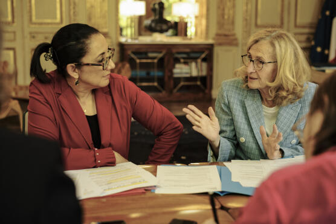

« Nous, parents d’élèves, apportons notre soutien aux enseignants qui font
classe dehors » Faire classe dehors favorise les apprentissages et
améliore la santé physique et mentale des enfants, rappelle, dans une
tribune au « Monde », un collectif d’acteurs de l’éducation qui plaide
pour un meilleur encouragement de l’enseignement dans la nature. notre
soutien aux enseignants qui font classe dehors » Faire classe dehors
favorise les apprentissages et améliore la santé physique et mentale des
enfants, rappelle, dans une tribune au « Monde », un collectif d’acteurs
de l’éducation qui plaide pour un meilleur encouragement de l’enseignement
dans la nature. Vous pouvez partager un article en cliquant sur les icônes
de partage en haut à droite de celui-ci. La reproduction totale ou
partielle d’un article, sans l’autorisation écrite et préalable du Monde,
est strictement interdite. Pour plus d’informations, consultez nos
conditions générales de vente. Pour toute demande d’autorisation,
contactez syndication@lemonde.fr. En tant qu’abonné, vous pouvez offrir
jusqu’à cinq articles par mois à l’un de vos proches grâce à la
fonctionnalité « Offrir un article ». Nous, parents, grands-parents et
amis des enfants de France, en avons assez de les voir enfermés à longueur
de journée. Nous voulons féliciter et remercier tous les acteurs de
l’éducation – enseignantes et enseignants, et avec eux les animatrices et
animateurs – qui accompagnent nos enfants et adolescents dehors. Ils
déploient leur mission éducatrice également hors des murs de leur classe
et nous leur faisons confiance. Enseignants pionniers : nous sommes vos
alliés. Sachez qu’il y a aujourd’hui dans chaque quartier, chaque école,
des habitantes et habitants qui souhaitent voir les enfants sortir, aussi
bien durant le temps de l’école qu’après la classe. Aussi sommes-nous
prêts à vous accompagner dehors, à rassurer d’autres parents qui
pourraient être encore hésitants. Nous savons qu’un enfant dans les bois
ne perd jamais son temps. Au contraire, sortir à l’extérieur, a fortiori
en nature, une demi-journée par semaine est fondamental pour la santé
mentale et physique des plus jeunes. Il s’agit aussi d’un enjeu de
société : la nature est essentielle à la bonne santé de tous et au plein
développement des enfants.